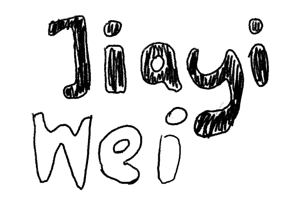
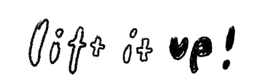
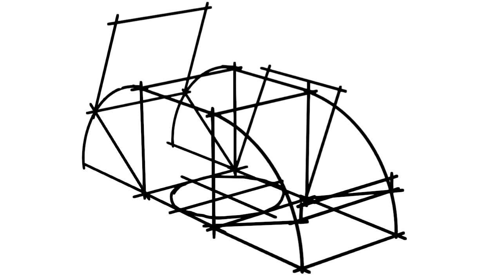
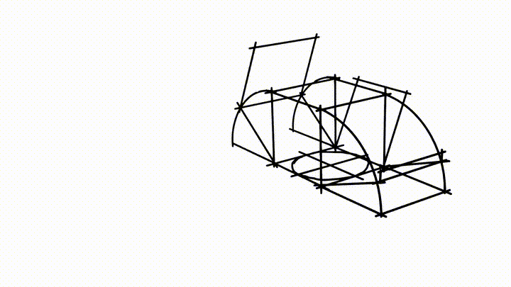
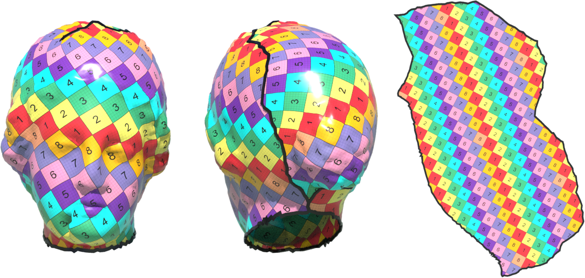
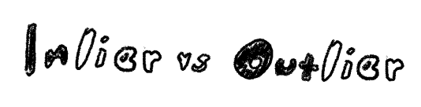
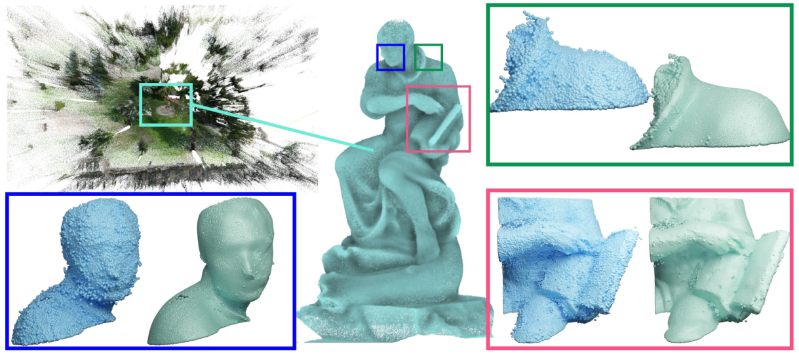

About Me
I am a Research Engineer in the GraphDeco team at Inria Sophia Antipolis. After earning my PhD at Ecole Polytechnique in 2023 with a focus on numerical optimization for geometry processing and animation, I have been devoted to develop interactive tools that bridge the gap between numerical computation and creative design.

User-Interactive 3D Reconstruction from Conceptual Sketching (ongoing)
I have developed a Blender add-on that bridges the Grease Pencil drawing interface with a symmetry-driven 3D reconstruction algorithm for concept sketches.





Robust Pointset Denoising of Piecewise-Smooth Surfaces through Line Processes.
I have developed a robust statistics-based framework for denoising 3D pointset, which can also be adapted to applications requiring the handling of discontinuities in geometry processing.

Contact
Email: kayiwei@gmail.com
GitHub: github.com/kwwei